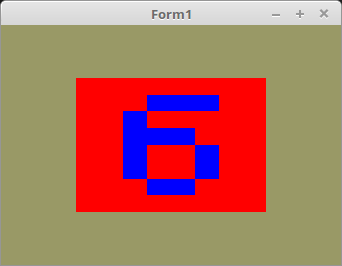

20 - Texturen
60 - Texturen Array

In der Praxis liegen die Texturen meisten als Bitmap, auf der Festplatte.
Hier wird gezeigt, wie man eine 24Bit BMP als Textur lädt.
Der Unterschied zur Konstante, das man die Bitmap noch laden muss, und anschliessend einen Zeiger darauf glTexImage2D(... mit gibt.
Man kann auch eine Bitmap selbst über Canvas zeichnen.
Das es sich hier um eine BMP-Datei handelt, kann man diese direkt mit TBitmap laden.
Anstelle von TBitmap kann man auch TPicture verwenden. Was sehr wichtig ist, man muss wissen in welchen Format die Bitmap gespeichert ist.
Je nach dem in welchen Format die Bitmap vorliegt, müssen die Parameter in glTexImage2D(... angepasst werden.
In diesen Beispiel sind es die Konstanten GL_RGB und GL_BGR.
Wen man eine Bitmap mit der Unit oglTextur lädt, werden diese Parameter automatisch angepasst.
Unterumständen könnte es noch exotische Formate geben, welche (noch) nicht unterstützt werden.
Bei einem Fehler bitte im DGL-Forum melden, evt. kann man es dann noch anpassen. ;-)
procedure TForm1.InitScene;
var
bit: TPicture; // Bei anderen Formaten TPicture.
begin
bit := TPicture.Create; // Bitmap erzeugen.
with bit do begin
LoadFromFile('ziffer.xpm'); // BMP in Bitmap laden.
glBindTexture(GL_TEXTURE_2D_ARRAY, textureID);
glTexImage3D(GL_TEXTURE_2D_ARRAY, 0, GL_RGB, Width, Height div 6, 6, 0, GL_BGR, GL_UNSIGNED_BYTE, Bitmap.RawImage.Data);
glTexParameteri(GL_TEXTURE_2D_ARRAY, GL_TEXTURE_MIN_FILTER, GL_NEAREST);
glTexParameteri(GL_TEXTURE_2D_ARRAY, GL_TEXTURE_MAG_FILTER, GL_NEAREST);
glBindTexture(GL_TEXTURE_2D_ARRAY, 0);
Free; // Bitmap frei geben.
end;
Vertex-Shader:
#version 330
layout (location = 0) in vec3 inPos; // Vertex-Koordinaten
layout (location = 10) in vec2 inUV; // Textur-Koordinaten
uniform mat4 mat;
out vec2 UV0;
void main(void)
{
gl_Position = mat * vec4(inPos, 1.0);
UV0 = inUV; // Textur-Koordinaten weiterleiten.
}
Fragment-Shader:
#version 330
in vec2 UV0;
uniform sampler2DArray Sampler;
uniform int Layer;
out vec4 FragColor;
void main()
{
FragColor = texture( Sampler, vec3(UV0, Layer) );
}
ziffer.xpm:
/* XPM */
static char *ziffer_xpm[] = {
/* width height num_colors chars_per_pixel */
" 8 48 16 1",
/* colors */
"` c #000000", ". c #800000", "# c #008000", "a c #808000",
"b c #000080", "c c #800080", "d c #008080", "e c #808080",
"f c #c0c0c0", "g c #ff0000", "h c #00ff00", "i c #ffff00",
"j c #0000ff", "k c #ff00ff", "l c #00ffff", "m c #ffffff",
/* pixels */
"jjjjjjjj", "jjjjijjj", "jjjiijjj", "jjijijjj", "jjjjijjj", "jjjjijjj", "jjjjijjj", "jjjjjjjj",
"iiiiiiii", "iiijjiii", "iijiijii", "iiiiijii", "iiiijiii", "iiijiiii", "iijjjjii", "iiiiiiii",
"kkkkkkkk", "kkkllkkk", "kklkklkk", "kkkklkkk", "kkkkklkk", "kklkklkk", "kkkllkkk", "kkkkkkkk",
"hhhhhhhh", "hhmhmhhh", "hhmhmhhh", "hhmhmhhh", "hhmmmmhh", "hhhhmhhh", "hhhhmhhh", "hhhhhhhh",
"aaaaaaaa", "aaiiiiaa", "aaiaaaaa", "aaiiiaaa", "aaaaaiaa", "aaaaaiaa", "aaiiiaaa", "aaaaaaaa",
"gggggggg", "gggjjjgg", "ggjggggg", "ggjjjggg", "ggjggjgg", "ggjggjgg", "gggjjggg", "gggggggg"
};